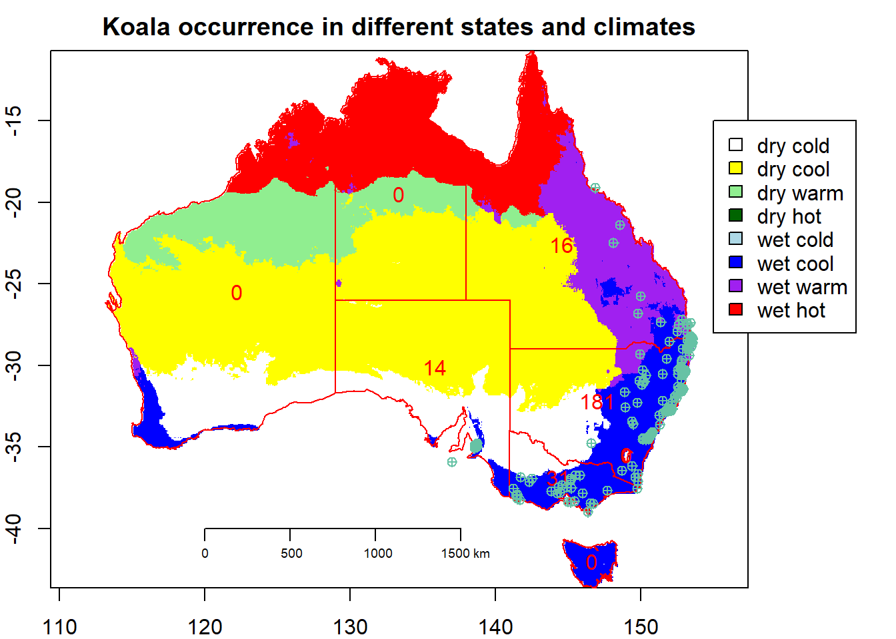

6 Plotting in Base R
You will use the basic R plotting to make a map showing climate categories, country and state outlines and points for koalas observations and then save the map to a png file
Data: output from raster and interaction section are used
6.1 Challenge 1: Make a simple map
# plot to set extent
par(mar = c(2,2,2,2))
plot(climate_au,
legend = FALSE,
col = colors,
main = "Koala occurrence in different states and climates",
key.pos = NULL)
# plot with colors for levels of factor (filled / outline)
# add the state outlines
plot(states2,
add = TRUE,
col = NA,
border = "red")# play with col and border!
polygonsLabel(states2,
labels = states2$Freq,
method = "centroid",
col = "red")## [,1] [,2]
## [1,] 122.1843 -25.47049
## [2,] 144.5335 -22.57526
## [3,] 135.8241 -30.07906
## [4,] 144.2959 -36.84460
## [5,] 149.0022 -35.48869
## [6,] 146.5946 -42.02384
## [7,] 147.0159 -32.17495
## [8,] 133.3700 -19.48190plot(koala_sf,
add = TRUE,
pch = 10) #,cex is a rough SHOULD WE ADD A COLUMN FOR E.G. male/female to have them add color categories?## Warning in plot.sf(koala_sf, add = TRUE, pch = 10): ignoring all but the
## first attribute# way to change the size of symbols or text, pch sets the symbol, feel free to play around
#map.axes(cex.axis=0.8) # here cex specifies font size # only needed if not there yet
maps::map.scale(120,
-40,
relwidth = 0.25,
metric = TRUE,
ratio = FALSE,
cex = 0.6) # exchange TRUE and FALSE to see what they
colors <- c("white",
"yellow",
"lightgreen",
"darkgreen",
"lightblue",
"blue",
"purple",
"red")
leg <- c("dry cold", "dry cool", "dry warm", "dry hot",
"wet cold", "wet cool", "wet warm", "wet hot")# c(11,12,13,14,21,22,23,24)
par(xpd = NA) # to enable to plot outside of plotting area
legend(155,
y = -15,
legend = leg,
fill = colors)